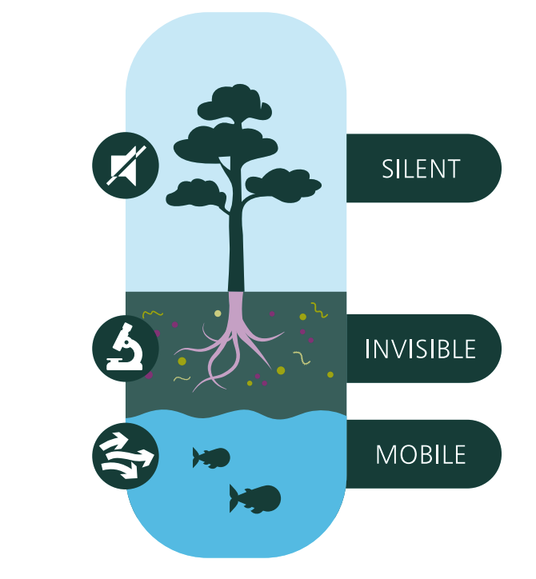
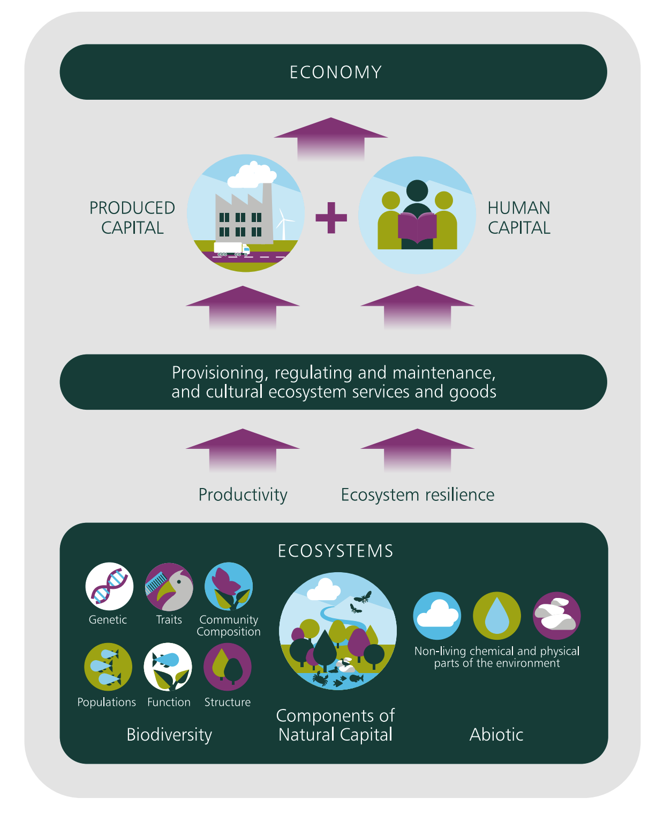
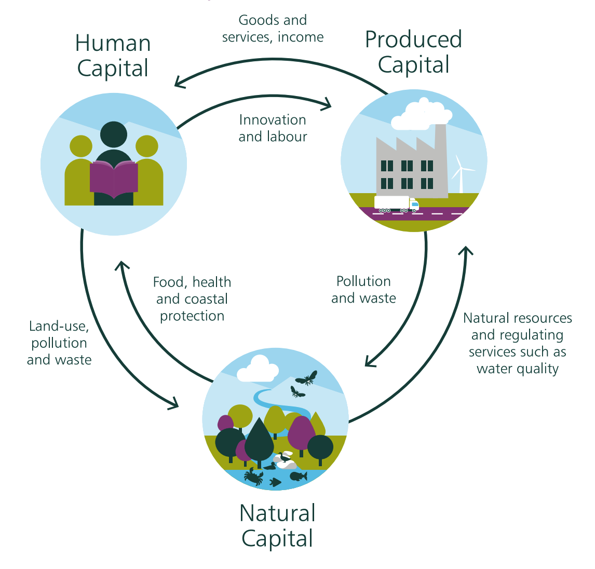
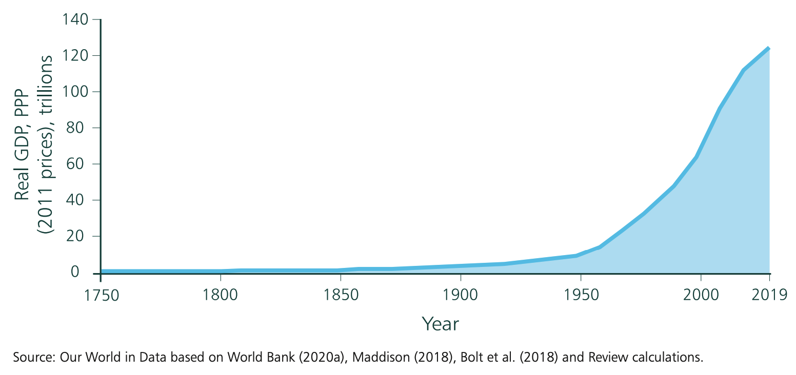
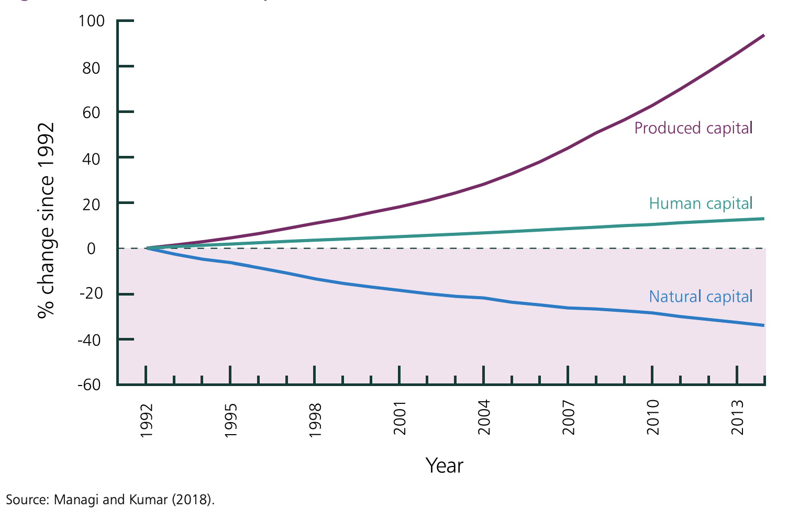
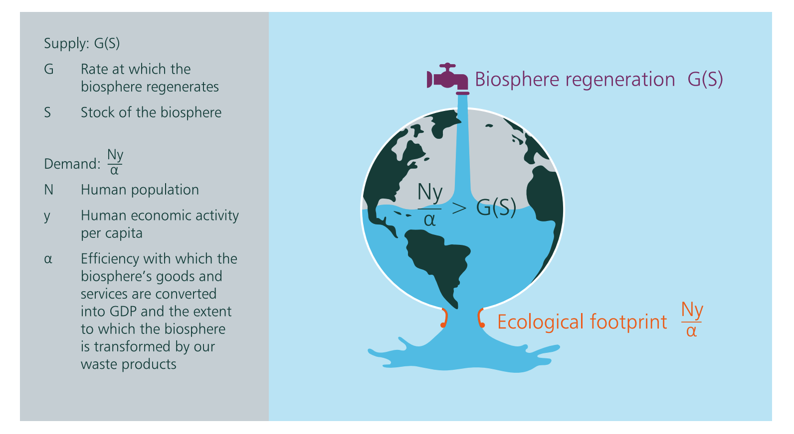
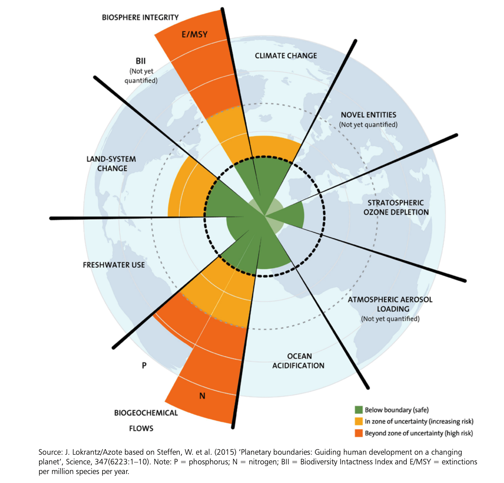

13 The Economics of Biodiversity
Biological diversity, or biodiversity for short, means the diversity of life in all its forms. Biodiversity is a characteristic of ecosystems which enables ecosystems to flourish.

Our demand for food, water, timber, fibre, minerals, and the dams that are built to supply water and produce electricity visibly destroy biodiversity. By tearing the landscape apart, mining and quarrying are also significant factors in biodiversity loss. Substitution of produced capital (roads, buildings ports, machines) for natural capital (ecosystems) has not only characterized our investment activities but also shaped our conception of economic progress.

13.1 Classifying and Valuing Assets
- Economists reserved the term ‘capital goods’ even more stringently than they do now, for they only included assets that are material (tangible) and alienable (i.e. whose ownership is transferable).
13.1.1 Produced capital
- Roads, buildings, machines and ports are ready examples. As patents held by a firm are part of the firm’s asset base, they appear in its balance sheet. So intangible and alienable assets are also included on the list of capital goods. Taken together, they are called produced capital.
13.1.2 Human capital
- The range of capital goods in the economist’s lexicon has broadened over the years to include intangible but non-alienable assets such as health, education, aptitude and skills, which, taken together, form human capital. Economists today include human capital as a category of capital goods because they have discovered ways to measure its value – not only to the individuals who acquire it, but also to society at large.
13.1.3 Natural capital
In the past decades, economists have developed methods for measuring the value individuals place on natural resources; so we now have a third category of capital goods: natural capital. The methods can be involved, for natural capital ranges over plants (they are tangible and alienable), pollinators (they are tangible and often non-alienable), the view from one’s sea-front home (it is intangible and alienable) and the global climate (it is intangible and non-alienable).
Valuation methods that involve estimating the use value of Nature by determining the productivity of its processes involve a blend of ecological and economic reasoning: The accounting value of a lake fishery can be approximated by the market value of catch over time.

13.2 The Global Economy in the Anthropocene
In 1950, world population was around 2.5 billion and GDP was around 9 trillion international dollars. The average person’s annual income was around 3,300 dollars PPP. Life expectancy at birth in 1950 was 46.
In 2019, the global population had grown to over 7.7 billion even while global GDP per capita had risen to around 16,000 dollars PPP. The world’s output of final goods and services was a bit above 120 trillion dollars PPP. Life expectancy at birth is around 73.
Globally measured economic activity had increased more than 13-fold in only 70 years.

- Following figure estimates of global accounting values per capita of the three classes of capital goods over the period 1992 to 2014. It shows that the value of produced capital per capita doubled and human capital per capita increased by around 13%, but the value of the stock of natural capital per capita declined by nearly 40%.

13.3 Unsustainable Economic Development
The biosphere is finite in extent, so the flow of goods and services it provides is bounded. We take goods and services from our planet and we deposit our waste into it: material has to balance.
What we take from our planet over a period of time and put back in as waste is known as our ecological footprint. So the footprint not only includes the goods and services we harvest and extract from the biosphere, it also includes the rate at which the biosphere is able to treat our waste.
In a healthy biosphere, humanity could, on reasonable utilitarian grounds, choose to draw it down somewhat and use the goods and services Nature supplies not only for consumption but also for accumulating produced capital (roads, buildings, machines, ports) and human capital (health, education, aptitude). That is what we have been doing over millennia and is what economic development has come to mean among many people.
That was a legitimate formulation of economic development when our ecological footprint was less than the biosphere’s ability to supply goods and services to meet that demand at a sustainable rate. Today the matter is different.

- There are therefore four avenues available to humanity for transforming the Impact Inequality into an Impact Equality. They involve finding ways to:
reduce per capita global consumption
lower future global population from what it is today
increase the efficiency with which the biosphere’s supply of goods and services are converted into global output and returned to the biosphere as waste; and
invest in Nature through conservation and restoration to increase our stock of Nature and its regenerative rate
13.4 Common Pool Resources (CPRs)
In economics, a common-pool resource (CPR) is a type of good consisting of a natural or human-made resource system (e.g. an irrigation system or fishing grounds), whose size or characteristics makes it costly, but not impossible, to exclude potential beneficiaries from obtaining benefits from its use.
Common-pool goods are typically regulated and nurtured in order to prevent demand from overwhelming supply and allow for their continued exploitation. Examples of common-pool resources include forests, man-made irrigation systems, fishing grounds, and groundwater basins.
13.5 Safe Operating Distance From Planetary Boundaries
- Rockstrom et al. (2009) identified nine biophysical processes that are critical for Earth System functioning. The authors’ proposal was to set quantitative boundaries for each.

Although not all the nine processes have single identifiable markers, crossing the boundaries increases the risk of large-scale, potentially irreversible, environmental changes
Four of the nine processes have taken the planet into regions the authors regard as outside safe operating space
Rockstrom et al. (2009) had identified it with the extinction rate of species per million per year (E/MSY)
13.6 Brain storming
Nature is a “blind spot” in economics. We can no longer afford for it to be absent from accounting systems that dictate national finances, or ignored by economic decision makers.
“If we care about our common future and the common future of our descendants, we should all in part be naturalists”- Professor Sir Partha Dasgupta. He has raised following questions to evaluate economic sustainability:
How is the economy doing?
How has it been doing in recent years?
What would be our projection of the economy in the future if policies and institutions evolve in the way we expect them to evolve?
How is the economy likely to perform under alternative policies?
Which policies should we support?
What would be an ideal set of policies?
Reference: Dasgupta, P. (2021). The Economics of Biodiversity: The Dasgupta review. Hm Treasury.